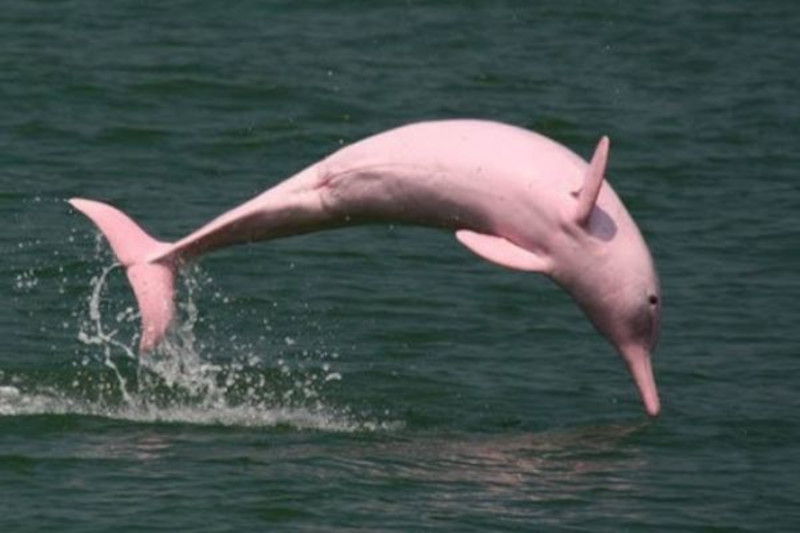

Boto-cor-de-rosa
The Amazon river dolphin, also known as the pink river dolphin or boto, is the largest freshwater dolphin. It has a sleek body, pink coloration, and a flexible neck. Botos are highly intelligent and social animals, communicating through clicks and whistles. They face threats from habitat degradation and hunting. Conservation efforts aim to protect them and their habitat in the Amazon rainforest. Preserving botos is crucial for the health of the rainforest ecosystem.
